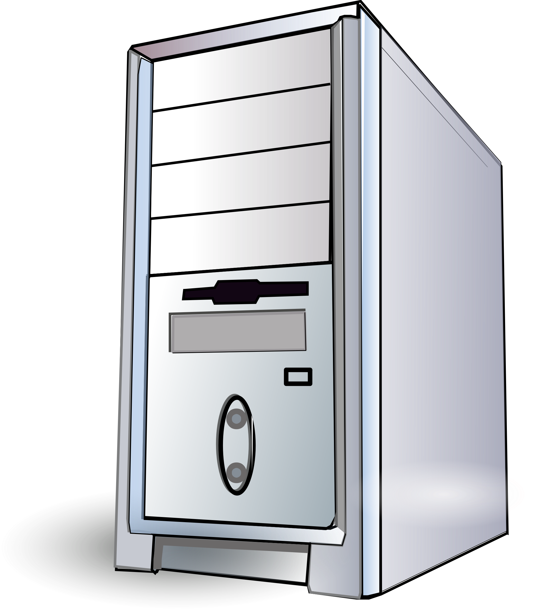

PROCESSING
Processing is done inside the computer in an area called the
Central Processing Unit or the CPU. Processing is the conversion of input to output.
The different parts of the CPU are:
- ALU-Arithmetic Logic Unit
- CU-Control Unit
- MU-Memory Unit
